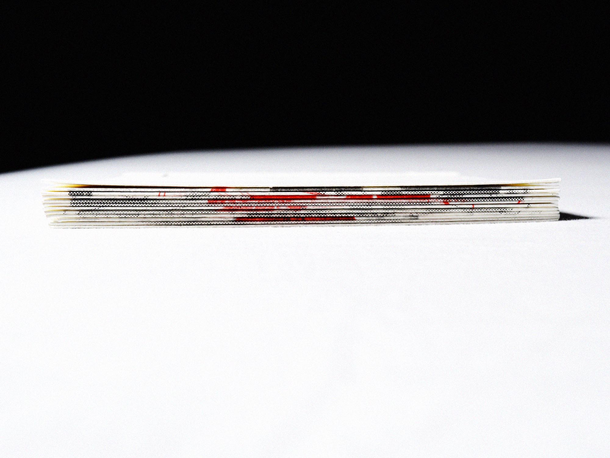
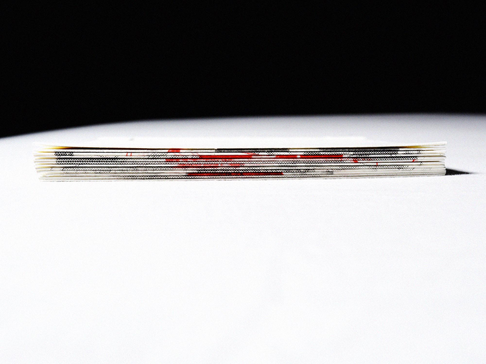

Medisch RISO
Een van de eerste keuzevakken die ik heb gevolgd tijdens mijn studie, RISO printen.
Deze techniek was gelijk heel interessant voor mij toen ik binnen kwam op de HKU. Riso geeft aan een strak design een ruig randje.
Bij deze specifieke opdracht heb ik een abstract medisch boekje gemaakt door middel van collage geknipt uit medische boeken van de kringloop. De collage knipsels zijn amper te onderscheiden van elkaar, zo mooi loopt het RISO-raster over in elkaar. Het boekje is op verschillende manieren gebonden, ook door middel van pleisters om het medische thema terug te laten komen.